Llegada a Japón — Hiroshima
Ruta: Narita Express → Shinagawa → Shinkansen Hikari → Shin-Osaka → Shinkansen Sakura → Hiroshima (~17:22h)
Hotel: 6 min andando (400 m) · Check-in automático en pantallas
APA Hotel Hiroshima-Ekimae Ohashi
Minami-ku, Kyobashicho 2-26 · Cruzar el cruce peatonal, girar a la derecha por Jonan Dori · Edificio alto y negro sobre el río Enko · Onsen en el 2º piso (aguas termales de origen volcánico)
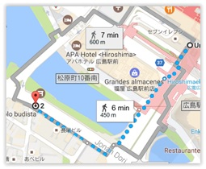
Hiroshima — Parque de la Paz · Isla de Miyajima
Genbaku Dome y Parque de la Paz
El Genbaku Dome (Cúpula de la Bomba Atómica): inaugurado en 1915, diseñado por el arquitecto checo Jan Letzel como Exposición Comercial de la Prefectura. El 6 de agosto de 1945, la bomba explotó a 600 metros sobre él. Único edificio que quedó en pie cerca del epicentro. Desde 1996, Patrimonio Mundial UNESCO.
En la entrada norte: la Campana de la Paz y el Cenotafio Conmemorativo (forma de arco que representa un refugio para las almas). La Llama de la Paz arde sin cesar desde 1964 y lo hará hasta que se destruyan todas las armas nucleares. Las Puertas de la Paz: 5 puertas de 5 metros con la palabra "paz" en varios idiomas.
Museo Conmemorativo de la Paz
Construido sobre pilotes: el espacio entre el terreno y el edificio elevado simboliza el poder del ser humano para resurgir de las cenizas. El ala este explica la historia de Hiroshima antes y después de la bomba; el edificio principal se centra en el daño causado.
Gran Torii de Miyajima — El símbolo de la isla
El gran Torii fue construido en 1168 a 200 metros de la costa. Con 16,6 metros de alto y 60 toneladas de peso, está hecho de madera de alcanforero de 500-600 años. El color vermellón mantiene alejados los malos espíritus. Su base no está anclada en el suelo marino: se aguanta sobre sí misma gracias a siete toneladas de piedras bajo los pilares. Con marea baja se puede caminar hasta él por la arena. Al anochecer, el santuario y el torii están iluminados hasta las 23:00h.
La isla está poblada de ciervos que pasean libremente. Los plebeyos no podían pisarla y debían acceder al santuario en barco, entrando a través del torii flotante.
Santuario Itsukushima · Pagoda Goju-no-to · Senjokaku
Santuario construido sobre pilotes desde el siglo VI. Con marea alta, el santuario y el gran torii parecen flotar sobre el agua. A un lado, un escenario flotante de nō construido por el señor Mōri. La Pagoda Goju-no-to (5 plantas · 1407) y el Senjokaku (pabellón de los mil tatamis · 1587) son visitas imprescindibles al lado del santuario.
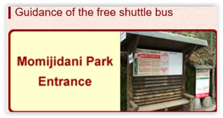
Mitchan Okonomiyaki / Restaurante Izakaya
Mitchan Okonomiyaki especializado en okonomiyaki (cerca de la estación). Alternativa: restaurante izakaya por la orilla izquierda del río antes de cruzarlo. También en el segundo piso de la estación hay múltiples opciones de okonomiyaki.
Okayama · Castillo de Himeji · Kyoto
Castillo de Okayama y Jardín Koraku-en
El Jardín Koraku-en, uno de los tres grandes jardines de Japón, construido por el señor feudal Ikeda y completado en 1700. Entrar por la puerta South. El castillo negro (apodado "del cuervo") está justo enfrente al cruzar el puente.
50 m. a la derecha. Abren a las 08h30. 400 yenes. Se tarda 1 hora aprox. Salir por main entrance. No hace falta entrar en el castillo. Ir de nuevo a la estación con tranvía
Castillo de Himeji — El Shirasagi-jo (Garza Blanca)
El más majestuoso de los 12 castillos feudales japoneses. Construido por Norimura Akamatsu en 1333, la torre de 5 plantas se construyó en 1609. Sale en la película RAN de Akira Kurosawa. Uno de los pocos castillos que conserva su estructura original de madera sobre base de piedra (no reconstruido en cemento como el de Osaka). 48 señores feudales diferentes pasaron por él sin destruirlo.
Es obligatorio descalzarse antes de subir. Las escaleras se hacen más inclinadas y estrechas en cada planta. En la sexta planta, vistas a los jardines y la ciudad. El santuario interior Osakabe-jinja fue trasladado desde una colina cercana al interior del castillo. El Hyakken Roka: corredor de casi 300 metros donde vivían las sirvientas de la princesa Sen.
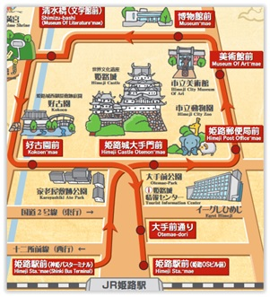
Hotel Sakura Terrace
Minami-ku, Higashi-kujo, Karasuma-cho 1-1 · 10 min a pie de la Torre de Kyoto · 15 min del templo Toji · 1 min de la parada del bus para Kiyomizu-dera · Comprar 4 Day Bus Ticket en la máquina del bus
Templo Toji
Erigido a finales del año 700. Sus 57 metros de altura lo hacen visible desde toda la ciudad y es la pagoda más alta de Japón. En el Kondo (salón principal) se encuentra el Buda Yakushi ("Buda de la medicina"), flanqueado por 7 budas más pequeños que simbolizan sus diferentes formas de aparición. Las 12 figuras bajo el asiento representan las 12 horas, los 12 meses y los 12 símbolos del zodiaco chino.
como reflejo de la creencia de su labor continua de proteger al mundo. Y a ambos lados de Yakushi aparecen otras dos figuras, una a la derecha simbolizando el sol, y otra a la izquierda simbolizando la luna.
Kyoto — Templos, Kiyomizu-dera y Gion
Sanjusangendo
Famoso por sus 1001 estatuas de Avalokiteśvara (Kannon), la deidad de la compasión con 11 cabezas y 1000 brazos. 1000 estatuas iguales de madera chapada en metal; la central mide más de 2 metros. Las 28 deidades guardianas incluyen Raijin (dios del rayo) y Fujin (dios del viento), Tesoros Nacionales de Japón. Bonito jardín y estanque con una roca central: si tiras una moneda y cae en la roca, tendrás buena suerte. Prohibido fotografiar el interior.
Higashi Hongan-ji
Templo principal de la rama Ohigashi-san. Construido sobre terreno donado por Tokugawa Ieyasu. El Salón del Fundador es una de las mayores estructuras de madera del mundo con 927 tatamis. Las sogas usadas en su construcción, hechas de cabello humano y cáñamo, fueron donadas por feligreses de todo el país. El Jardín Shosei-en (Kikoku-tei) fue construido en el periodo Heian.
Kiyomizu-dera y el barrio de Gion
El manantial Otowa-no-taki: la gente hace cola para beber su agua pura con propiedades curativas. El Jishu-jinja (templo del amor): dos piedras separadas 18 metros; hay que caminar de una a otra con los ojos cerrados para obtener el amor deseado.
Sannen-zaka: pintoresca calle con casas de madera y casas de té (si tropiezas, 3 años de mala suerte). Continúa hacia Ninen-zaka y luego a Ishibei-koji, posiblemente la calle más bonita de Kyoto. El barrio de Gion y el callejón de Pontocho: mejor visitarlo de noche, cuando los faroles encendidos recrean el ambiente del antiguo Japón.
Shimogamo-Jinja · Kinkakuji · Ryoan-ji · Ninna-ji · Arashiyama
El Pabellón Dorado (Kinkakuji) fue construido en 1397 como casa de retiro del sogún Ashikaga Yoshimitsu. En 1950, un joven monje lo redujo a cenizas por obsesión; la reconstrucción de 1955 añadió láminas de pan de oro. Ryoan-ji: jardín zen con 15 rocas en un mar de arena (solo puede verse el exterior desde el jardín). Ninna-ji: construido en 842, el más importante de la rama Omura. El Arashiyama Bamboo Grove y el templo Tenryu-ji (construido en 1339 sobre la antigua casa de campo del emperador Go-Daigo). después de que un sacerdote soñara con un dragón que surgía del cercano río. El sueño se interpretó como una señal del espíritu del emperador que estaba inquieto y se construyó un templo para apaciguarlo. Los edificios actuales son del 1900 y el jardín zen del s.XIV. Por la noche iluminan todas las calles de la ciudad.
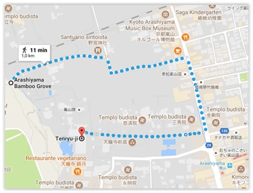
Fushimi Inari-Taisha · Nara — Ciervos y Gran Buda
Fushimi Inari-Taisha
Dedicado a los dioses del arroz y el sake. El sendero de 4 kilómetros se adentra en la montaña, siempre flanqueado por torii rojos. Docenas de zorros de piedra (el zorro es el mensajero de Inari, dios de los cereales). El complejo está formado por cinco santuarios en las laderas boscosas de Inari-yama. No es necesario hacer todo el recorrido.
Nara — Kofuku-ji, Todai-ji y Kasuga Taisha
Kofuku-ji (500 Yenes): primero que se ve al entrar en el Parque Natural Nara Koen. Sus pagodas de tres pisos (1143) y cinco pisos (1426) son iconos del parque. Los ciervos sika, mensajeros de las deidades en el sintoísmo, pasean libremente. Las galletas de arroz sembei (150 yenes) se venden para dárselas.
Todai-ji (500 Yenes): el Daibutsuden es el edificio de madera más grande del mundo (aunque la reconstrucción actual es un 33% más pequeña). El Gran Buda de Nara: 15 metros de alto, 500 toneladas, flanqueado por dos Bodhisattvas. El famoso pilar con un agujero del tamaño de la nariz del Buda: si pasas por él, lograrás la iluminación en la próxima vida.
Kasuga Taisha: 2.000 lámparas de piedra en el camino y 1.000 de bronce en el santuario. Data del año 768 y pertenece a la familia Fujiwara. Encadenado a las sagradas montañas de Kasugayama.
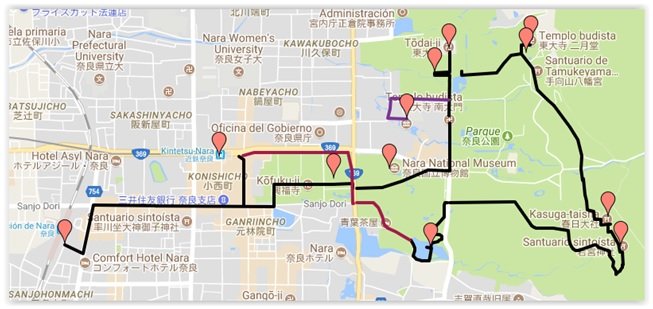
Monte Koya — El centro espiritual del budismo Shingon
Atención: No todos los vagones llegan hasta Koyasan. Preguntar al revisor en qué vagón subir.
Templo Kongobuji — Centro del budismo Shingon
El Monte Koya: un montículo con 8 picos que representa los 8 pétalos de la flor de loto, símbolo del budismo. El Ohiroma: recinto principal con pinturas de naturaleza atribuidas al pintor Kano Tanyu. El Jodan-No-Ma: sala de recepción con paredes de láminas de oro y techo decorado con flores. El Yanagi-No-Ma (habitación del Sauce): aquí se suicidó Toyotomi Hidetsugu. El Banryutei: el mayor jardín zen de Japón (2.349 m²), con 140 piezas de granito de Shikoku formando dos dragones emergiendo de un océano de nubes.
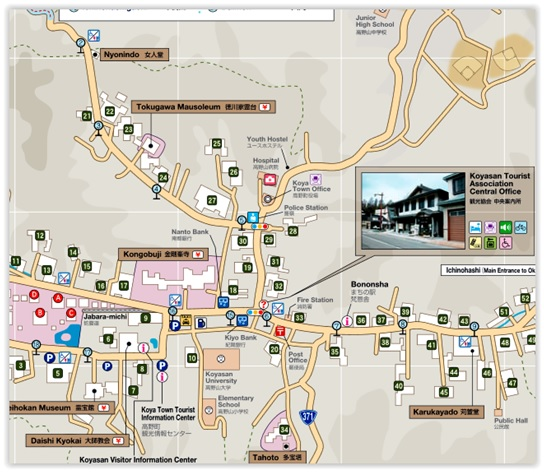
Complejo Garan y Puerta Daimon
El Danjo Garan es uno de los dos lugares más sagrados de Koyasan. En el siglo IX, Kobo Daishi celebró aquí la ceremonia fundacional. El Daito (Gran Stupa, iniciado en 816): la primera pagoda construida en estilo "tahoutou" en Japón, con estatuas de los ocho patriarcas del budismo esotérico. La Daimon: puerta principal de 25,1 metros de altura, reconstruida en 1705, con estatuas Kongo-Rikishi guardianes.
Okunoin — El lugar más sagrado de Japón
El templo donde Kobo Daishi (Kûkai), fundador del Budismo Shingon, descansa en meditación eterna. Rodeado del cementerio más grande de Japón con más de 200.000 tumbas entre centenarios cedros. La senda adoquinada de 2 km lleva al mausoleo. El Toro-do (pabellón de faroles): 11.000 lámparas encendidas día y noche, incluidas dos que, según se dice, llevan encendidas desde el siglo XI. La impresionante Sala de las Lámparas: cada lámpara representa una familia por la que los monjes rezarán eternamente.
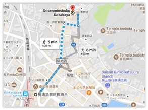
Hotel Kongo Sanmaiin
Koyasan · Nº 34 en el plano · 400 m / 6 min desde donde deja el bus · Desayuno 7:30h · Checkout 8:30h · Baño en el Onsen del balneario por la noche
Kii-Katsuura — El mayor puerto de atún de Japón
Meditar con los monjes en el templo-hotel
A las 6:30 meditar con los monjes. Desayunar a las 7h30 y hacer checkout a las 8h30. Preguntar con qué bus regresar a la estación o bien coger un taxi porque tenemos que estar en la estación a las 9h18 9h18 Nankai Koya Line for HASHIMOTO llegada a HASHIMOTO(WAKAYAMA) a las 10h10. Salida a las 10:38 JR Wakayama Line for WAKAYAMA hacia Wakayama. Llegada a las 11h44. Salida a las 12h15 LTD. EXP KUROSHIO 9 hacia KIIKATSUURA. Llegada a las 15h03. Si perdiéramos ese, la otra opción es: 11h21 Nankai Koya Line for HASHIMOTO llegada a HASHIMOTO(WAKAYAMA) a las 12h02 Salida a las 12:30 JR Wakayama Line for WAKAYAMA hacia Wakayama. Llegada a las 13h36. Salida a las 14h17 LTD. EXP KUROSHIO 13 hacia KIIKATSUURA. Llegada a las 17h02. En coche serían 134 km. Aproximadament 3 hores, 16 minuts. Al salir de la estación, antes de atravesar el puente de las vías, hay una oficina de turismo. Mirar si está abierta. Ir al Hotel Onsenminshuku Kosakaya
Onsenminshuku Kosakaya
649-5333 Wakayama, Katsuura, Nachikatsuuracho, Kitahama 1-18 · 400 m / 5 min de la estación
Restaurante Bodai
Al lado de la estación, especializado en atún. Muy bueno. El puerto de Katsuura es el mayor puerto de atún de Japón. También hay marisquerías y baños de pies en el puerto. Los barcos para ver ballenas salen desde el fondo del puerto.
Kumano Nachi Taisha · Cascada de Nachi · Shingu
Cuesta Daimonzaka y Santuario Kumano Nachi Taisha
La cuesta Daimonzaka: 267 peldaños y 650 metros flanqueados por enormes cedros centenarios y árboles de alcanfor. Los Meoto-sugi (cedros casados): dos cedros de más de 800 años con raíces entrelazadas. En la explanada: árbol de alcanfor sagrado de 850 años (hoy convertido en kami), la piedra del cuervo (karasu-ishi, símbolo del Kumano Kodo) y vistas espectaculares a las montañas de la península de Kii. Es el santuario principal de los más de 4.000 santuarios de Kumano.
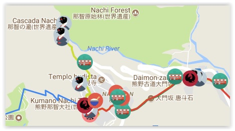
Cascada de Nachi y Pagoda Seiganto-ji
Con 133 metros de altura, es la cascada más grande de Japón. La imagen más popular: la cascada tras la pagoda roja de tres pisos (1972). El templo Seiganto-ji (siglo V) es la estructura más antigua de la zona y la primera parada de la peregrinación de los 33 Kannon. En la base de la cascada hay consagrada una imagen de Kannon de 25 cm. Por 300 yenes se puede beber su agua y subir al escenario de veneración.
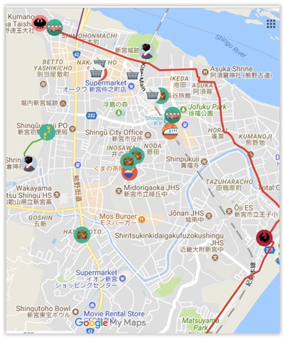
Santuario Kumano Hayatama Taisha · Shingu
En la desembocadura del río Kumano, unión de las montañas con el océano Pacífico. El árbol Nagi de 1.000 años es venerado como una de las 12 deidades. El salón del tesoro contiene más de una docena de tesoros nacionales. La isla flotante Uki-shima (100 Yenes · 9:00–17:00): un bosque con plantas acuáticas y helechos que flota sobre un estanque. El santuario Kamikura: 538 escalones hasta la roca sagrada Gotobiki-iwa, donde se dice que los dioses descendieron a la tierra.
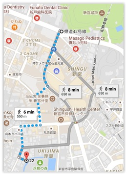
Takayama · Shirakawa-go — Las casas de manos en oración
Shirakawa-go — Las casas gassho-zukuri
Distrito montañoso conocido por sus granjas con tejados de paja a dos aguas llamadas gassho-zukuri ("manos en oración"). Algunas casas tienen más de 250 años y miden 18 metros de largo, 10 de ancho y 3-4 pisos. Tradicionalmente criaban gusanos de seda en el ático. El asentamiento central Ogimachi: 600 personas en 110 edificios gasho-zukuri.
El Museo al aire libre: 25 casas tradicionales trasladadas aquí para salvarlas, con actividades de tinte de tejidos y elaboración de fideos soba. El Mirador de Shirakawago (Ogimachi Castle Observation Desk). El Museo del Festival Doburoku: a la salida invitan a un chupito de sake casero con los granos de arroz. El Santuario Shirakawa Hachimangu. Los baños termales Shirakawago no Yu.
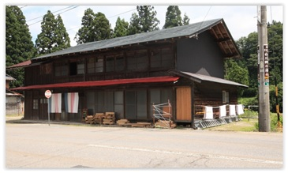
Shirakawago Hostel 白川郷ホステル
950 m + 700 m desde la parada del bus · Justo enfrente de la parada, el restaurante Soba Wakimoto (fideos soba). Junto al hotel, el museo al aire libre con casas gassho-zukuri.
Soba Wakimoto
Restaurante especializado en fideos soba, justo enfrente de la parada del bus de Shirakawa-go.
Cerezo Ohta - Templo Hongakuji - Templo Myozenji
Maravillarnos ante la belleza del cerezo Ohta, designado monumento natural de la prefectura, a las afueras del templo Hongakuji y visitar el salón del templo Myozenji y la casa del monje, que está justo al lado, ya que ambas edificaciones siguen el estilo arquitectónico de Shirakawago. (Callecita lateral arriba de la Shirakawa highway) Tomar un delicioso mitarashi dango en alguna cafetería o puestecillo de Ogimachi, por ejemplo, en Isamami… ¡delicioso!. Cenar en un restaurante o puesto callejero la carne típica y volver al hotel.
Takayama · Hakone — La pequeña Kyoto y el volcán
Takayama — Casco histórico y Hida Kokubunji
Conocida como la pequeña Kyoto. Las tres calles principales de Sanmachi-Suji (Ichi-no-Machi, Ni-no-Machi y San-no-Machi) están llenas de destilerías de sake, tiendas de recuerdos y sarubobo (el bebé mono de colores que trae suerte). El Miya-gawa Morning Market (pasando el río): puestos de artesanía y comida.
Hida Kokubunji: el templo más antiguo de Takayama (siglo VIII). En el patio: una pagoda de tres pisos y un gingko de 1.200 años. La especialidad local: el sukiyaki (olla con verduras, carne de ternera muy fina en salsa especial, mojada en huevo crudo).
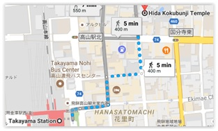
Hakone Tozan Railway: Línea privada (no JR Pass) · Odawara → Gora (~40 min) · Única línea de tren de montaña de Japón
Takayama — Hakone Tozan Cable Car
El funicular asciende 211 metros entre la estación de Gora y la estación de Sounzan en una línea prácticamente recta, cubriendo la distancia de 1,2 kilómetros entre ambos puntos en aproximadamente 10 minutos. El grado de inclinación es visible si miras hacia abajo desde los asientos de la parte trasera del funicular. Al llegar a la estación de Gora, la puerta de acceso para el Hakone Tozan Cable Car se encuentra cerca.
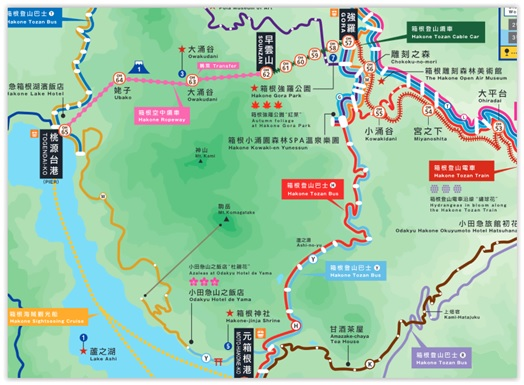
Museo de arte de Hakone
Ir al museo de arte de Hakone pero cierra a las 16h30. jardín japonés precioso con musgo verde. Puedes beber té japones al estilo antiguo. Justo enfrente de la parada del cablecar. Ir a Hakone Gora park. 8min. 550m andando. Pero cierran a las 17h. El Hakone Open Air Museum también cierra a las 17h. Ir para dar una vuelta y volver al hotel
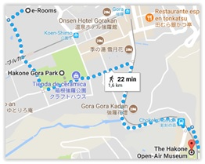
Apartahotel Tabibito no Yado e-Rooms
5 min / 300 m de la estación Koen-Kami del cablecar Tozan · Al salir de la estación, cruzar el puente justo por debajo · Supermercado conbini Daily a 5 min · Restaurante Tonkatsu (filete de cerdo empanado) en la zona
Hakone — Ropeway · Lago Ashi · Llegada a Tokyo
Ropeway de Hakone · Owakudani · Lago Ashi
El ropeway (teleferíco) con más tránsito de pasajeros del mundo: 48 góndolas, 30 minutos de Sounzan a Togendai. En Owakudani (zona volcánica activa): humo, burbujas, olor a azufre y las famosas tiendas con huevos negros (cocidos en agua sulfurosa) y cacahuetes negros.
El barco "pirata" (Hakone Sightseeing Cruise) cruza el Lago Ashi, formado en la caldera del volcán Hakone hace 3.000 años. Desde el lago, vistas al santuario de Hakone con sus grandes torii rojos, uno en el agua. La ruta histórica Kyukaido (antigua carretera Tokaido) entre Moto-Hakone y Hatajuku, con el antiguo pavimento de piedras bien conservado.
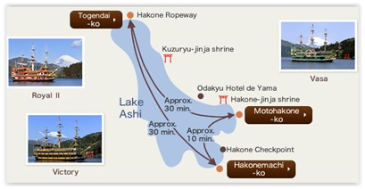
Hotel Villa Fontaine Tokyo-Tamachi
Tokyo · 600 m / 7 min desde la estación de Tamachi (JR Yamanote) · 1ª a la derecha y 1ª a la derecha
Tokyo — Tsukiji · Asakusa · Tokyo Skytree · Kabuki-za · Shibuya
Mercado de Tsukiji y Jardín de Hama
Levantarse pronto para la subasta del atún (5:00-9:30). El Jardín de Hama (300 Yenes · 9:00-17:00): construido en 1654 por el sogún Tokugawa, famoso por su estanque de agua salada que cambia con las mareas. Tomar té en el salón Nakajima sobre el estanque.
El barco Himiko (diseñado por Leiji Matsumoto) navega por el río Sumida hasta Asakusa pasando por 12 puentes de diferentes colores · 35 minutos · Reserva nº 086319.
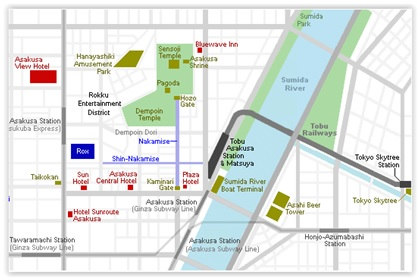
Asakusa — Templo Senso-ji
En 628, dos hermanos pescaron una estatua de Kannon en el río Sumida; siempre volvía a ellos, así que construyeron el Sensoji. La Puerta Kaminarimon (La puerta del Trueno): construida hace más de 1.000 años, símbolo de Asakusa. Los guardianes Fujin y Raijin tienen cabezas antiguas y cuerpos nuevos. La calle Nakamise Dori lleva desde la puerta al templo. Frente al embarcadero, la Torre de la Cerveza Asahi, conocida por los turistas como el "cagarro dorado" (1989, sede de las destilerías Asahi).
Tokyo Skytree
La torre de comunicaciones más alta del mundo con 634 metros. Cuenta con dos miradores: la Tembo Deck a 350 metros (2.060 Yenes) y la Tembo Galleria a 450-451 metros. La velocidad de ascensión llega a 600 metros por minuto. En la base, el centro comercial Tokyo Solamachi con 312 restaurantes y tiendas.
Teatro Kabuki-za y barrio de Ginza
El principal teatro de kabuki de Tokyo. El teatro kabuki es uno de los tres teatros clásicos de Japón. Se pueden comprar entradas para un solo acto (ventanilla lateral, el mismo día). 4 actos: 16:30, 17:22, 18:20 y 20:02h. Llegar sobre las 18h para el último acto. Paseo por el barrio de Ginza: los almacenes Wako (con reloj), la calle principal Harumi-Dori. Opcional: el cruce de Shibuya (6 paradas Yamanote); subir al Starbucks para verlo desde arriba.
Tokyo — Harajuku · Meiji · Shinjuku · Ueno · Odaiba
Harajuku · Parque Yoyogi · Santuario de Meiji
La calle Takeshita Dori: 800 metros de tiendas con diseño retro-futurista. La tienda oficial de las AKB48. El Parque Yoyogi (villa olímpica de Tokyo 1964): el Gimnasio Nacional de Tange Kenzo sigue en un extremo.
El Santuario de Meiji: dedicado al primer emperador del Japón moderno (1921). La entrada está marcada por grandes torii de madera y cobre con la flor de crisantemo imperial. Lavarse las manos en la fuente temizuya, lanzar monedas, hacer reverencias y pedir deseos. Muy popular para bodas sintoístas.
Shinjuku — Tocho (Gobierno Metropolitano)
El edificio del Gobierno Metropolitano de Tokyo (Tocho): rascacielos de 243 metros diseñado por Kenzo Tange (1991). Dos observatorios a 202 metros (piso 45) completamente gratuitos. La torre norte abierta hasta las 23h. Vistas del santuario de Meiji, la Torre de Tokyo, la Tokyo Skytree y el monte Fuji. Alrededor, un parque lleno de esculturas de arte moderno.
El barrio de Ikebukuro: ocio, manga, anime y visual kei. Bic Camera (electrónica) en la salida este. El Parque Ueno con el santuario Toshogu (1627), la estatua de Saigo Takamori y el lago.
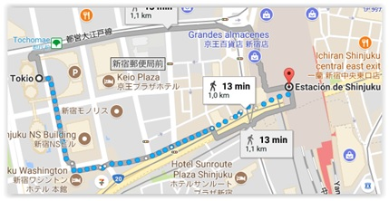
Odaiba — La isla artificial de la bahía
Construida originalmente como fortaleza defensiva en 1853 (la palabra daiba significa "batería de artillería"). Acceso en monorail Yurikamome atravesando el Rainbow Bridge (570 metros · 1993). Visitas: réplica de la Estatua de la Libertad frente al Rainbow Bridge, centro comercial DiverCity con el robot Gundam gigante, la sede de la Fuji TV (Tange Kenzo · 1996) con el mirador Hachitama (500 Yenes). La Venus Fort (recrea una ciudad italiana del Renacimiento). La noria Daikanransha de 115 metros (inaugurada 1999).
Tokyo Tower y Torre de Tokyo
De característico color rojo y blanco, la Torre de Tokyo abrió en 1958 para retransmisiones de la NHK. Dos observatorios: 150 metros (820 Yenes) y 250 metros (1.420 Yenes). Abierta hasta las 22h. Vistas del monte Fuji y la Tokyo Skytree en días despejados.
Tokyo — Regreso a Barcelona
Narita Express al aeroperto
Ir al aeropuerto. Ir a la parada Tamachi de la línea Yamanote hacía SHINAGAWA (dirección Osaki) 1 parada y tarda 3 minutos. Horarios: Llegar a las 8:30 aprox. para coger 8:35 JR Keihin-Tohoku/Negishi Line Local dirección KAMATA, o bien después de esa hora cualquiera de la JR Yamanote a SHINAGAWA para coger a las 8:49 el LTD. EXP NARITA EXPRESS 13 y llega a Terminal 1 Narita Airport a las 9:57. 9:30 aprox. Coger la JR Yamanote a SHINAGAWA para coger a las 9:50 el LTD. EXP NARITA EXPRESS 15 y llega a Terminal 1 Narita Airport a las 10:58. El vuelo AZ785 sale de la terminal 1 hacía Roma a las 13h15 y llega a las 19:00 (normalmente en la terminal 3 vuelos internacionales). El vuelo AZ78 sale de Roma a las 21h25 (normalmente por la puerta B27 de la terminal 1) y llega a la terminal 1 de Barcelona a las 23h15.